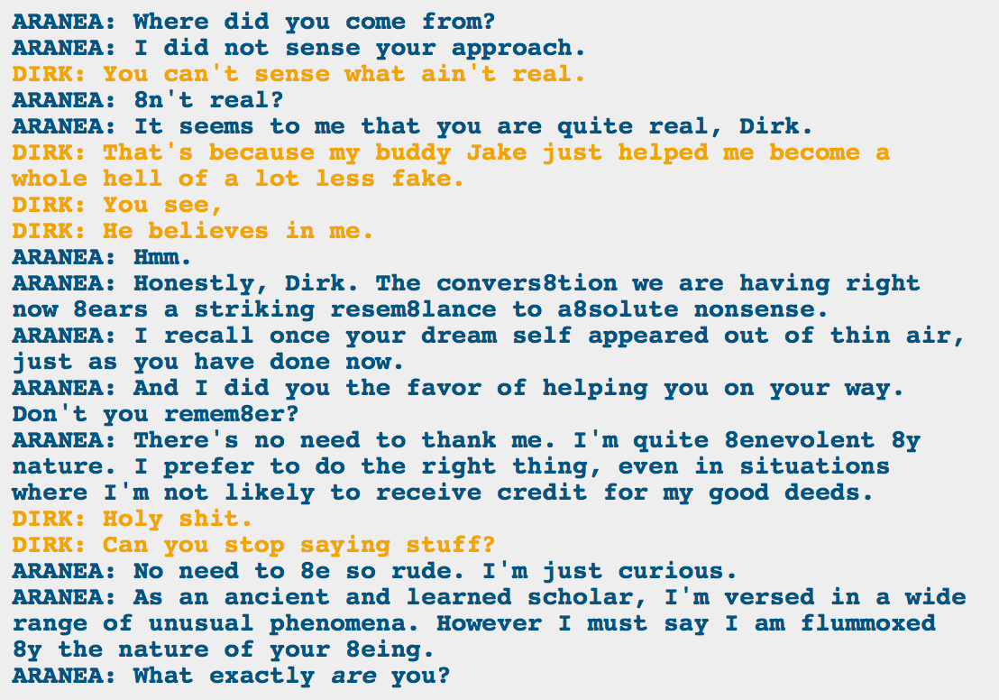

HE IS AWESOME, THAT’S WHAT!
But now there are three Dirks in the world. Or, well, Arquius doesn’t quite count, but there are still two Dirks, and that’s possibly not good.
I really hope this doesn’t end up being a heroic sacrifice. That’s how these things usually tie themselves up, but it would be sad to lose a Dirk, even if we have another.